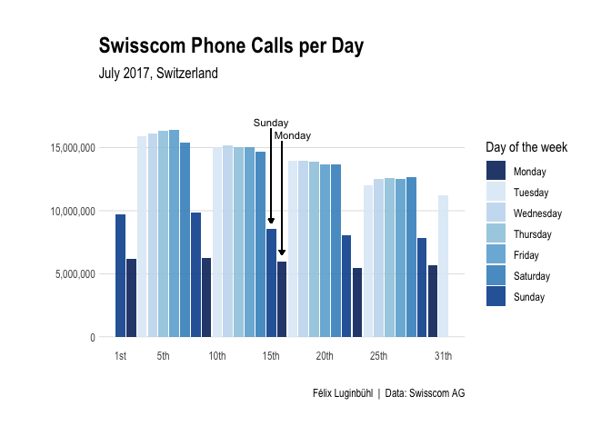
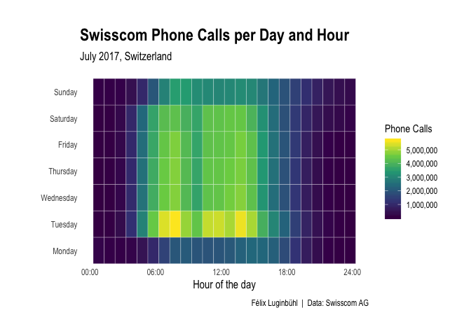
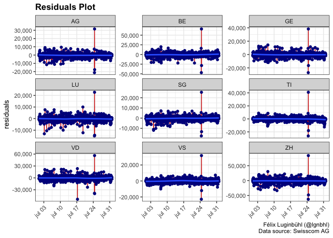
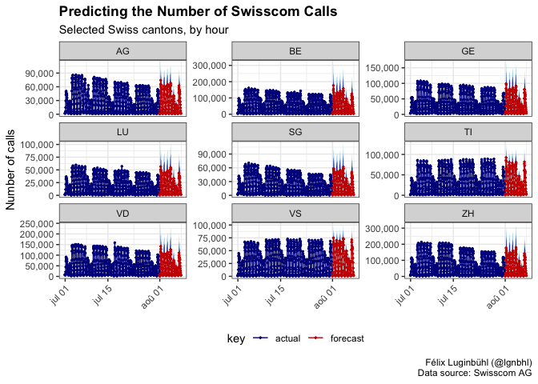

Copyright © 2020 Félix Luginbühl. All rights reserved.
I recently heard that one of the major Swiss telecommunications provider, Swisscom AG, decided to share data on a Open Data Portal. As Swiss citizen, I was curious to see if I could put my hands on interesting datasets.
In this article, we will make a time series analysis of the number of phone calls by hour, day and Swiss canton in July 2017 based on the Open Data Portal. We will build forecasting models for each canton to predict the number of phone calls per hour for the first days of August 2017. And we will do all this in a tidy way.
On the Swisscom platform, I found three promising datasets: the number of phone calls, SMS and data downloaded per canton in July 2017. Swisscom gives access to its data only for this month.
Let’s begin by downloading the three datasets and have a glimpse of them.
library(tidyverse)
url1 <- "https://opendata.swisscom.com/explore/dataset/number-of-voice-calls-per-canton-201707/download/?format=csv&timezone=Europe/Berlin&use_labels_for_header=true"
url2 <- "https://opendata.swisscom.com/explore/dataset/number-of-sms-sent-per-canton-201707/download/?format=csv&timezone=Europe/Berlin&use_labels_for_header=true"
url3 <- "https://opendata.swisscom.com/explore/dataset/effektiver-datendownload-pro-kanton-und-stunde-en/download/?format=csv&timezone=Europe/Berlin&use_labels_for_header=true"
download.file(url = url1, destfile = "swiss_call.csv")
download.file(url = url2, destfile = "swiss_sms.csv")
download.file(url = url3, destfile = "swiss_data.csv")
swiss_call <- read.csv2("swiss_call.csv")
swiss_sms <- read.csv2("swiss_sms.csv")
swiss_data <- read.csv2("swiss_data.csv")
glimpse(swiss_call) # 20,115 observations## Observations: 20,115
## Variables: 3
## $ Kanton <fct> AG, AG, AG, AG, AG, AG, AG...
## $ Datum.und.Zeit <fct> 2017-07-01T13:00:00+02:00,...
## $ Anzahl.Anrufe.pro.Kanton.und.Stunde <int> 43580, 43866, 44283, 30377...## Observations: 20,115
## Variables: 3
## $ Kanton <fct> SG, SG, SG, SG, SG, SG, SG, S...
## $ Datum.und.Zeit <fct> 2017-07-19T16:00:00+02:00, 20...
## $ Anzahl.SMS.pro.Kanton.und.Stunde <int> 14294, 15854, 13806, 8586, 12...## Observations: 20,088
## Variables: 4
## $ Kanton <fct> VD, VD...
## $ Datum.und.Zeit <fct> 2017-0...
## $ Effektiver.Datendownload.pro.Kanton.und.Stunde.in.Bytes <dbl> 2.4063...
## $ Effektiver.Datendownload.pro.Kanton.und.Stunde.in.GB <fct> 2241.0...The three datasets are well structured. We can join them together to build a unique dataset and make some cleaning.
library(lubridate)
swissData <- swiss_call %>%
full_join(swiss_sms, by = c("Kanton", "Datum.und.Zeit")) %>%
full_join(swiss_data, by = c("Kanton", "Datum.und.Zeit")) %>%
select(canton = 1, date = 2, nCall = 3, nSMS = 4, nBytes = 5, nGB = 6) %>%
mutate(date = as_datetime(date),
nGB = as.numeric(nGB)) %>%
filter(canton != "LI") %>% # remove Liechtenstein
arrange(date) %>%
as_tibble()
print(swissData)## # A tibble: 19,370 x 6
## canton date nCall nSMS nBytes nGB
## <fct> <dttm> <int> <int> <dbl> <dbl>
## 1 AI 2017-06-30 22:00:00 71 19 6528531111. 15350.
## 2 SG 2017-06-30 22:00:00 1861 1462 290464073994. 9032.
## 3 GR 2017-06-30 22:00:00 863 574 140638082495. 3125.
## 4 SH 2017-06-30 22:00:00 147 666 41447348997. 11824.
## 5 SO 2017-06-30 22:00:00 736 504 209639609745. 6569.
## 6 GE 2017-06-30 22:00:00 3335 2219 359004229636. 10809.
## 7 NW 2017-06-30 22:00:00 231 125 24987344359. 7707.
## 8 LU 2017-06-30 22:00:00 1210 620 221333360558. 6921.
## 9 NE 2017-06-30 22:00:00 1817 665 119579881196. 1219.
## 10 JU 2017-06-30 22:00:00 380 362 44149994010. 12394.
## # ... with 19,360 more rowsDid we get missing values when using the full_join function?
## canton date nCall nSMS nBytes nGB
## 0.00 0.00 0.00 0.00 0.13 0.13## [1] "2017-07-25 14:00:00 UTC" "2017-07-25 14:00:00 UTC"
## [3] "2017-07-25 14:00:00 UTC" "2017-07-25 14:00:00 UTC"
## [5] "2017-07-25 14:00:00 UTC" "2017-07-25 14:00:00 UTC"
## [7] "2017-07-25 14:00:00 UTC" "2017-07-25 14:00:00 UTC"
## [9] "2017-07-25 14:00:00 UTC" "2017-07-25 14:00:00 UTC"
## [11] "2017-07-25 14:00:00 UTC" "2017-07-25 14:00:00 UTC"
## [13] "2017-07-25 14:00:00 UTC" "2017-07-25 14:00:00 UTC"
## [15] "2017-07-25 14:00:00 UTC" "2017-07-25 14:00:00 UTC"
## [17] "2017-07-25 14:00:00 UTC" "2017-07-25 14:00:00 UTC"
## [19] "2017-07-25 14:00:00 UTC" "2017-07-25 14:00:00 UTC"
## [21] "2017-07-25 14:00:00 UTC" "2017-07-25 14:00:00 UTC"
## [23] "2017-07-25 14:00:00 UTC" "2017-07-25 14:00:00 UTC"
## [25] "2017-07-25 14:00:00 UTC" "2017-07-25 14:00:00 UTC"Swisscom doesn’t give the data downloaded in each canton at 4pm the 25th of July. Strange.
Let’s begin with interactive visualizations of our datasets using {dygraphs}. The {timetk} package lets use easily transform our dataset into a xts object.
library(timetk)
library(dygraphs)
swissData %>%
select(canton, date, nCall) %>%
spread(canton, nCall) %>%
tk_xts() %>%
dygraph(main = "Number of call, by Swiss canton and hour") %>%
dyRangeSelector()
swissData %>%
select(canton, date, nSMS) %>%
spread(canton, nSMS) %>%
tk_xts() %>%
dygraph(main = "Number of SMS, by Swiss canton and hour") %>%
dyRangeSelector()
swissData %>%
select(canton, date, nGB) %>%
spread(canton, nGB) %>%
tk_xts() %>%
dygraph(main = "Number of GB downloaded, by Swiss canton and hour") %>%
dyRangeSelector(dateWindow = c("2017-07-01", "2017-07-03"))
Ugly but effective!
We can distinct two seasonalities in the number of phone calls and SMS: per day and per week. These two datasets look promising for building forecasting models, especially for the number of phone calls. In the contrary, it is hard to see periodicity in the number of GB downloaded per hour.
From now, we will only study the number of phone calls per hour. The beauty of R programming is that the same code can be run on the dataset related to SMS.
Before diving into forecasting, let’s explore the relationship between the day of the month and the number of calls.
library(hrbrthemes)
swissData_daily <- swissData %>%
mutate(day = as_date(date),
wday = wday(date),
wday = as.factor(wday),
wday = fct_recode(wday, "Monday" = "1", "Tuesday" = "2", "Wednesday" = "3",
"Thursday" = "4", "Friday" = "5", "Saturday" = "6", "Sunday" = "7")) %>%
group_by(day, wday) %>%
summarize(n = sum(nCall, na.rm = T))
colors_seven = RColorBrewer::brewer.pal(9, "Blues")[c(9, 2, 3, 4, 5, 6, 8)]
swissData_daily %>%
filter(day != as.Date("2017-06-30")) %>%
ggplot(aes(x = day, y = n, fill = wday)) +
geom_bar(stat = "identity", alpha = 0.9) +
scale_y_continuous(limits = c(0, 18000000),
breaks = c(0, 5000000, 10000000, 15000000),
labels = scales::comma,) +
scale_x_date(breaks =c(as.Date("2017-07-01"), as.Date("2017-07-05"), as.Date("2017-07-10"),
as.Date("2017-07-15"), as.Date("2017-07-20"), as.Date("2017-07-25"),
as.Date("2017-07-31")),
labels = c("1st", "5th", "10th", "15th", "20th", "25th", "31th")) +
scale_fill_manual(values = colors_seven, name = "Day of the week") +
geom_segment(aes(x = as.Date("2017-07-15"), y = 16500000,
xend = as.Date("2017-07-15"), yend = 9000000),
size = 0.3,
arrow = arrow(type = "closed", length = unit(0.15, "cm"))) +
annotate("text", x = as.Date("2017-07-15"), y = 17000000, label = "Sunday", size = 3) +
geom_segment(aes(x = as.Date("2017-07-16"), y = 15500000,
xend = as.Date("2017-07-16"), yend = 6500000),
size = 0.3,
arrow = arrow(type = "closed", length = unit(0.15, "cm"))) +
annotate("text", x = as.Date("2017-07-17"), y = 16000000, label = "Monday", size = 3) +
theme_ipsum(grid = "Y", caption_face = "plain", axis_text_size = "9") +
#theme(legend.position = c(0.9, 0.9), legend.direction = "horizontal") +
#guides(fill = guide_legend(nrow = 1, label.position = "bottom", title.position = "top")) +
labs(x = "", y = "",
title = "Swisscom Phone Calls per Day",
subtitle = "July 2017, Switzerland",
caption = "Félix Luginbühl | Data: Swisscom AG")
We can oberve a lower level phone calls on Monday and on Sunday. I wouldn’t have expected such an important drop on Monday.
And what about the number of phone calls by day and by hour?
swissData_hourly <- swissData %>%
mutate(wday = wday(date),
hour = lubridate::hour(date)) %>%
group_by(hour, wday) %>%
summarize(n = sum(nCall, na.rm = T)) %>%
mutate(wday = as.factor(wday)) %>%
mutate(wday = fct_recode(wday, "Monday" = "1", "Tuesday" = "2", "Wednesday" = "3",
"Thursday" = "4", "Friday" = "5", "Saturday" = "6", "Sunday" = "7"))
swissData_hourly %>%
ggplot(aes(x = hour, y = wday)) +
geom_tile(aes(fill = n), colour = "white") +
scale_x_continuous(breaks = c(0, 6, 12, 18, 24),
labels = c("00:00", "06:00", "12:00", "18:00", "24:00")) +
scale_fill_viridis_c(labels = scales::comma, name = "Phone Calls") +
theme_ipsum(grid = FALSE, caption_face = "plain", axis_text_size = "9",
axis_title_just = "center", axis_title_size = "12") +
theme(axis.text.x = element_text(hjust = 1)) +
labs(x = "Hour of the day", y = "",
title = "Swisscom Phone Calls per Day and Hour",
subtitle = "July 2017, Switzerland",
caption = "Félix Luginbühl | Data: Swisscom AG")
Once again, we can see that on Monday and Sunday less calls are made. We can also see that the highest pick of calls seems to be on Tuesday around 8am and 2pm. Now you will be less surprized to be interrupted by a phone call at that time of the day.
Time to get our hands dirty trying some forecasting!
Let’s begin by making a nested data frame, so we can build multiple models.
swissData_call_nested <- swissData %>%
select(canton, date, nCall) %>%
group_by(canton) %>%
nest(.key = "data.tbl")
print(swissData_call_nested)## # A tibble: 26 x 2
## canton data.tbl
## <fct> <list>
## 1 AI <tibble [745 x 2]>
## 2 SG <tibble [745 x 2]>
## 3 GR <tibble [745 x 2]>
## 4 SH <tibble [745 x 2]>
## 5 SO <tibble [745 x 2]>
## 6 GE <tibble [745 x 2]>
## 7 NW <tibble [745 x 2]>
## 8 LU <tibble [745 x 2]>
## 9 NE <tibble [745 x 2]>
## 10 JU <tibble [745 x 2]>
## # ... with 16 more rowsThe exploratory analysis revealed that the dataset has two seasonalities. It fluctuates daily and weekly. As explained here by Rob Hyndman, creator of the {forecast} package, multi-seasonal periods can be effectively handled using a msts object, followed by a TBATS model.
The {sweep} package, implementing {broom} functions for time-serie objects, lets us easily tidying the residuals and the predictions of our TBATS models.
library(forecast)
library(sweep)
swissData_call_nested <- swissData_call_nested %>%
mutate(data.ts = map(data.tbl, timetk::tk_ts, frequency = 24,
start = as.Date("2017-07-01"),
end = as.Date("2017-08-01"))) %>%
mutate(data.msts = map(data.ts, msts, seasonal.periods = c(24, 24*7))) %>%
mutate(data.tbats = map(data.msts, tbats)) %>% #take 10 minutes to run
mutate(data.fcast = map(data.tbats, forecast, h = c(24*7))) %>%
mutate(data.augm = map(data.tbats, sweep::sw_augment)) %>%
mutate(data.tidy = map(data.fcast, sweep::sw_sweep))
print(swissData_call_nested)## # A tibble: 26 x 8
## canton data.tbl data.ts data.msts data.tbats data.fcast data.augm
## <fct> <list> <list> <list> <list> <list> <list>
## 1 NW <tibble [7~ <S3: ts> <S3: mst~ <S3: tbat~ <S3: fore~ <tibble [7~
## 2 AG <tibble [7~ <S3: ts> <S3: mst~ <S3: tbat~ <S3: fore~ <tibble [7~
## 3 VD <tibble [7~ <S3: ts> <S3: mst~ <S3: tbat~ <S3: fore~ <tibble [7~
## 4 ZH <tibble [7~ <S3: ts> <S3: mst~ <S3: tbat~ <S3: fore~ <tibble [7~
## 5 SZ <tibble [7~ <S3: ts> <S3: mst~ <S3: tbat~ <S3: fore~ <tibble [7~
## 6 OW <tibble [7~ <S3: ts> <S3: mst~ <S3: tbat~ <S3: fore~ <tibble [7~
## 7 BS <tibble [7~ <S3: ts> <S3: mst~ <S3: tbat~ <S3: fore~ <tibble [7~
## 8 AR <tibble [7~ <S3: ts> <S3: mst~ <S3: tbat~ <S3: fore~ <tibble [7~
## 9 ZG <tibble [7~ <S3: ts> <S3: mst~ <S3: tbat~ <S3: fore~ <tibble [7~
## 10 UR <tibble [7~ <S3: ts> <S3: mst~ <S3: tbat~ <S3: fore~ <tibble [7~
## # ... with 16 more rows, and 1 more variable: data.tidy <list>Sadly the the timetk_idx option of the sw_sweep function, which preserves the time basis, doesn’t work. So we will create a time index using the {timetk} package.
swissData_ts_index <- swissData %>%
filter(canton == "BE") %>%
tk_ts(frequency = 24, start = as.Date("2017-07-01")) %>%
tk_index(timetk_idx = TRUE)
swissData_ts_index_pred <- tk_make_future_timeseries(swissData_ts_index, n_future = 24*7)
swissData_ts_index2 <- c(swissData_ts_index, swissData_ts_index_pred)Now let’s plot the residuals of our models. For the sake of readability, we will select only the nine most populated Swiss cantons.
# url: https://en.wikipedia.org/wiki/Cantons_of_Switzerland#List
cantons_9 <- c("ZH", "BE", "VD", "AG", "SG", "GE", "LU", "TI", "VS")
swissData_call_nested %>%
filter(canton %in% cantons_9) %>%
unnest(data.augm) %>%
mutate(date = rep(swissData_ts_index, times = 9)) %>% #add date index
ggplot(aes(x = date, y = .resid)) +
geom_line(color = "red3") +
geom_point(color = "darkblue") +
geom_smooth(method = "loess") +
scale_y_continuous(labels = scales::comma) +
facet_wrap(~canton, scales = "free_y") +
theme_bw() +
theme(axis.text.x = element_text(angle = 45, hjust = 1),
plot.title = element_text(face="bold")) +
labs(x = NULL, y = "residuals",
title = "Residuals Plot",
caption = "Félix Luginbühl (@lgnbhl)\nData source: Swisscom AG")
Our nine model residuals are quite regular, at the exception of three hours on July the 24th. At what time of the day are these high residuals?
swissData_call_nested %>%
filter(canton %in% cantons_9) %>%
unnest(data.augm) %>%
mutate(date = rep(swissData_ts_index, times = 9)) %>% #add date index
select(canton, date, .resid) %>%
arrange(desc(.resid))## # A tibble: 6,705 x 3
## canton date .resid
## <fct> <dttm> <dbl>
## 1 ZH 2017-07-24 13:00:00 84253.
## 2 BE 2017-07-24 13:00:00 65969.
## 3 VD 2017-07-24 13:00:00 56212.
## 4 TI 2017-07-24 13:00:00 40955.
## 5 GE 2017-07-24 13:00:00 38284.
## 6 VS 2017-07-24 13:00:00 31739.
## 7 AG 2017-07-24 13:00:00 31550.
## 8 ZH 2017-07-07 08:00:00 30546.
## 9 SG 2017-07-24 13:00:00 25433.
## 10 VD 2017-07-17 06:00:00 23288.
## # ... with 6,695 more rowsWhat happened the 24th of July between 1pm and 3pm? I really have no idea.
Finally, let’s visualize our 7-day predictions for nine Swiss cantons.
swissData_call_nested %>%
filter(canton %in% cantons_9) %>%
unnest(data.tidy) %>%
mutate(date = rep(swissData_ts_index2, times = 9)) %>% #add date index 2
ggplot(aes(x = date, y = nCall, color = key)) +
geom_ribbon(aes(ymin = lo.95, ymax = hi.95),
fill = "lightblue", color = NA, size = 0) +
geom_ribbon(aes(ymin = lo.80, ymax = hi.80, fill = key),
fill = "blue4", color = NA, size = 0, alpha = 0.8) +
geom_line() +
geom_point(size = 0.5) +
scale_y_continuous(labels = scales::comma) +
facet_wrap(~canton, scales = "free_y") +
scale_color_manual(values = c("darkblue", "red3")) +
theme_bw() +
theme(axis.text.x = element_text(angle = 45, hjust = 1),
legend.background = element_blank(),
legend.key = element_blank(),
legend.position = "bottom",
plot.title = element_text(face="bold")) +
labs(x = NULL, y = "Number of calls",
title = "Predicting the Number of Swisscom Calls",
subtitle = "Selected Swiss cantons, by hour",
caption = "Félix Luginbühl (@lgnbhl)\nData source: Swisscom AG")
Our forecasting models did quite a good job. They got correctly the two seasonalities, i.e. per day and per week. However, they seem to overestimate the number of phone calls in August. It is not a surprise that our forecasting models are approximate. As Niel Bohr once famously said:
Prediction is difficult, especially if it’s about future.

Copyright © 2020 Félix Luginbühl. All rights reserved.